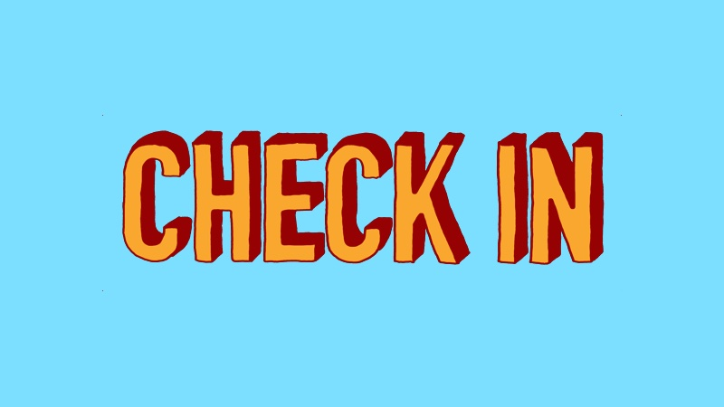
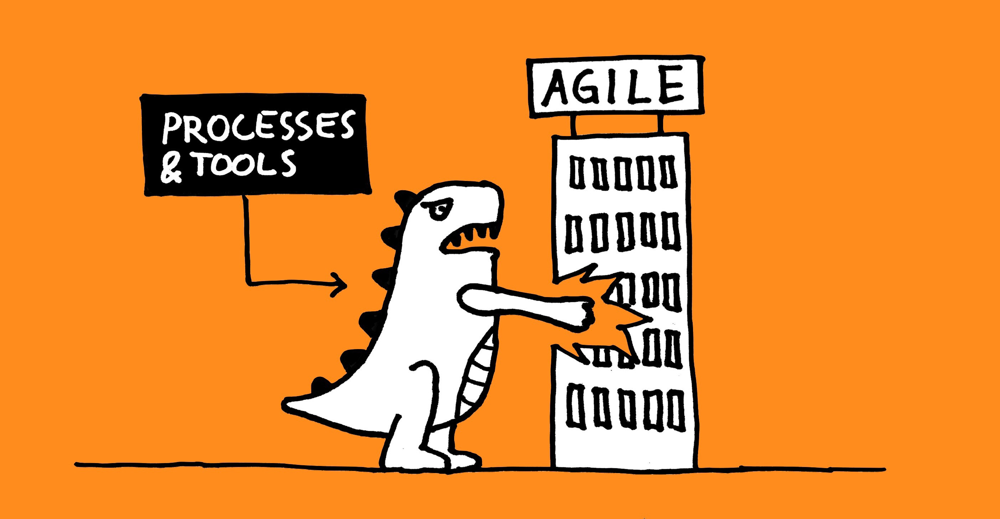

As much as we value individuals and interactions over tools in agile, there is no way around it:
Proper tools are essential for good remote meetings.
If an individual has a bad microphone, we can’t hear them. If they have a bad camera, we can’t see them. If they have a bad internet connection, we will lose them altogether!
Read more

There are many reasons why some teams are partially distributed, with some team members working together in an office and one or more others from somewhere else. Perhaps it hasn’t been possible to hire someone locally with the desired skills, or the team members just value the flexibility to work from home to time to time. Yes, the latter is a partially distributed team too!
Either way, the imbalance between colocated and remote team members means that these teams can be some of the most challenging when it comes to working together as a true team.
Let’s look at some things that can help to reduce the risk of your partially distributed team turning into a “partial team”!
Read more
... and get your printable “shooting target” here

Regardless of whether you use a print-out (for example using my template below :) or draw one on a whiteboard, a shooting target can be a simple but versatile tool for scoring pretty much anything in your retrospectives.
Read more

The more, the merrier, right? Well, not in Scrum.
Every time I’ve been working with a team bigger than the 3-9 people guideline, I’ve experienced how incredibly hard it can be to make Scrum work well in these conditions. And problems can start showing even with teams towards the higher end of what’s “allowed”!
In this post, I will share the top 5 reasons I’ve seen why smaller is better.
Read more

The sprint weather report is one of my favourites when it comes to agile check-in exercises for retrospectives. I used to run this exercise by printing each symbol on A4, put them up on the board and let people dot vote, but it always felt a bit wasteful to throw away the marked print outs at the end of each retrospective. I have therefore created some cards to use and reuse instead.
In case they are useful to anyone else, I’m posting them here on the blog as a free download.
Read more

A quick check-in exercise is a great way to start a retrospective. Not only does it help the group get warmed up and quickly get a feeling for how everyone feels the sprint went. It’s also a really useful tool for you as the facilitator, as a way to assess what’s going on. Is whatever plan you have for the rest of the retrospective the right one or do you need to do something different?
As a facilitator, it’s a good idea to have several different check-ins to choose from, so that you can keep your retrospectives varied and interesting. I will share my favourites in this article.
Read more

Whenever a group of agilists meet, it seems to be only a matter of time before someone points out that “doing agile is not enough, we need to be agile”.
Hard to argue with that! Agile practices alone will not make us agile. Simply going through the motions of “doing agile” won’t deliver the outcomes we’re after. However, it worries me sometimes that the pendulum may be swinging too far. Searching for better processes and tools is almost seen as anti-agile. “You should focus on the mindset, not worry about the tools!”.
I think it’s just as important to flip the statement around:
Read more